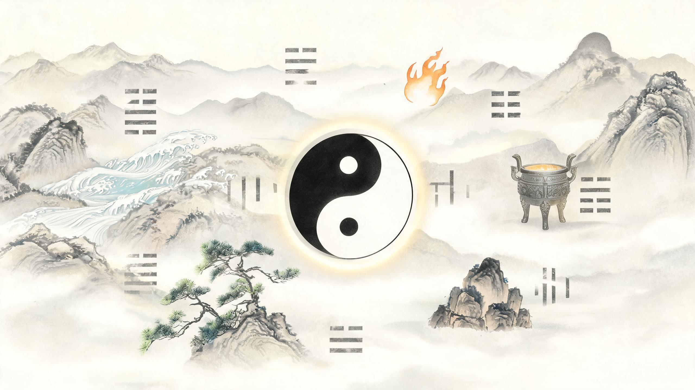

中五中
5土 · 寄坤
—枢
时家转盘奇门 · 原文 注解 实操
奇门遁甲不是一本可以“找到”的完整古书，而是一套以九宫为盘、以时辰为用的推演体系。 本书把散落在《烟波钓叟歌》《奇门遁甲统宗》《遁甲演义》等典籍中的原文、口诀与排法收拢起来， 按“基础—起局—断局—原文”四层重排，配以完整例盘与可操作的排盘器，让读者从看懂盘面，到能亲手起出一盘。
很多人第一次接触奇门遁甲，都会问同一个问题：“奇门遁甲的全书在哪？”答案是——没有一部书叫《奇门遁甲全书》。今人所见的“奇门”，是由若干层文本叠起来的：上层是托名黄帝、风后的起源传说，中层是《烟波钓叟歌》这样的纲领歌诀，下层是《奇门遁甲统宗》《御定奇门宝鉴》《奇门旨归》《遁甲演义》等各家的排法与断法。它们彼此并不完全一致，甚至互相矛盾。
所以，真正的“完整”不是把某一本书复制一遍，而是把同一条规则的不同说法摆在一起，告诉你哪一种是主流、为什么、以及怎么用。这本书做的就是这件事。
《烟波钓叟歌》全文、十干克应诀、八门九星所主等。保留原貌，标点分段，逐句注解。读原文是为了知道规则的出处，而不是背口诀。
用现代汉语把“阳遁顺仪奇逆布”“值符常遣加时干”这类术语拆开，说明每一步在盘上到底发生了什么。
定局、布地盘、转天盘、排八门、布八神，七步走完一张盘；再用同一个盘讲用神、旺衰、格局、应期。
每一处流派分歧都标明出处与取舍理由，并给出可核对的自检方法——排完盘，你可以自己验算。
不建议从《烟波钓叟歌》第一句开始硬啃。歌诀是给已经会排盘的人做提纲用的，初学者读它只会得到一堆无法落地的名词。推荐顺序：
读完第二章与第三章，能在九宫格上指出：哪个是地盘干、哪个是天盘干、九星在哪、八门在哪、八神在哪。
第四章跟做一遍七步流程。先用纸笔手工排三张盘，再对照排盘器核验。排盘错了，后面全是空谈。
第五章先学“取用神”和“看落宫旺衰”，这两件事占断局工作量的七成。格局是加分项，不是起点。
第六章带着已经建立的盘感回读歌诀，会发现每一句都能对应到盘上的一个位置。
先把“奇门遁甲”这四个字拆开，再把它放回两千年的文献脉络里。知道它从哪来、分几支，才不会在互相矛盾的口诀里迷路。
“奇门遁甲”四个字，本身就是一张说明书：
合起来，奇门遁甲就是以九宫为坐标、以时辰为变量，把天时（九星）、人事（八门）、神煞（八神）、干仪（三奇六仪）四层信息叠在一张盘上，再据此判断吉凶、主客、进退与应期的推演体系。
奇门遁甲 = 一张九宫盘 + 四层符号 + 一个时间刻度。九宫是空间，时辰是时间，四层符号分别是天盘干、九星、八门、八神。
它最容易被误解的地方，是把“遁甲”当成某种隐身法术。实际上“遁”在这里只有一个技术含义：六甲不露面，以六仪代之。之所以要藏，是因为在干支纪时里，甲是旬首、是统领，若直接写在盘上，六十甲子就无法压缩进九个宫位。用六仪代甲，是编码上的必要，不是玄虚。
《烟波钓叟歌》开篇就把源流写成了一条清晰的简化链：
轩辕黄帝战蚩尤，涿鹿经年苦未休。偶梦天神授符诀，登坛致祭谨虔修。
神龙负图出洛水，彩凤衔书碧云里。因命风后演成文，遁甲奇门从此始。
一千八十当时制，太公删成七十二。逮于汉代张子房，一十八局为精艺。
一千八十：一年三百六十日、每日十二时，共四千三百二十时；风后“撮四候而共看六十时”，压缩为一千八十局。
太公删成七十二：按七十二候，每候一局，故为七十二活局。
子房一十八局：张良进一步把阳遁九局、阴遁九局固定下来，共十八局——这就是今天时家奇门所用的框架。
这条线是传说，不是信史。但它准确描述了一个事实：奇门的历史，就是不断把“四千三百二十”压缩成“十八”的历史。局数越少，越依赖“加临”这一步现场推演。
《遁甲演义》把这件事说得更技术化：
昔黄帝始创奇门四千三百二十局。法乃岁按八卦分八节，节有三气，岁大率二十四气也。气有天地人三候，岁大率七十二候也；候有五日，岁大率三百六十日也。日有十二时，岁大率四千三百二十时也。一时一局，故奇门四千三百二十局也。
汉张子房删捷冬至十二气，分三十六候，撮四候为阳遁九局；夏至十二气，分三十六候，撮四候为阴遁九局，此活图更捷也。
注意最后一句“此活图更捷也”。所谓“活图”，指的就是十八局只是底图，真正的一张盘要靠值符、值使临时加临才能生成。所以学会奇门，关键不在背十八张图，而在掌握加临的规则。
| 典籍 | 性质 | 本书取用 | 建议 |
|---|---|---|---|
| 《烟波钓叟歌》 | 纲领性歌诀，托名赵普，经罗通删改、池纪注解 | 第六章全文录入并逐段注解 | 必读。它是全部规则的压缩版 |
| 《奇门遁甲统宗》 | 题诸葛亮撰，集排法、赋诀、类象于一体 | 起局规则、八门九星所主、八神类象 | 工具书，排盘时查 |
| 《遁甲演义》 | 明程道生撰，重源流与古法 | 源流、年家月家日家起例 | 了解体系全貌 |
| 《御定奇门宝鉴》 | 清代官修，体系严整 | 格局与断法参照 | 进阶 |
| 《奇门旨归》 | 清锡孟樨撰，重实战断局 | 分类占断思路 | 进阶 |
| 《金函玉镜奇门遁甲秘笈全书》 | 题诸葛亮，十干克应诀最全 | 第五章格局总表 | 查格局用 |
奇门在流传中分成多个支系。按“盘怎么动”来分，主要是三家：
| 流派 | 九星怎么排 | 八门怎么排 | 特点 | 流行度 |
|---|---|---|---|---|
| 转盘奇门（时家） | 九星整体随值符旋转，保持原有相对位置 | 八门整体随值使旋转 | 结构严整，规则最统一，古籍依据最足 | 主流，本书采用 |
| 飞盘奇门 | 九星按洛书数逐宫飞布（阳顺阴逆） | 八门亦飞布 | 与转盘结果常有差异，研习者较少 | 小众 |
| 阴盘奇门 | 起局与断法大幅简化，重象意联想 | 重象意 | 入门快，但体系与古籍脱节较多 | 现代流行 |
本书选择时家转盘奇门，理由有三：
其一，规则闭合。转盘的九星、八门都是“刚体旋转”，一旦定出值符、值使，其余各宫的位置唯一确定，不依赖额外的飞宫口诀，便于自检。
其二，古籍支持最直接。《奇门遁甲统宗》的“值符加时干法”“值使加时支法”，描述的就是转盘动作；《烟波钓叟歌》“星符每逐时干转，值使常随天乙奔”也是转盘语气。
其三，可验证。排完盘后，你可以用“值符是否落在时干宫”“值使是否行了正确步数”“八神是否从值符宫起顺排”三条独立校验，任何一条不符就是排错了。飞盘与阴盘的校验点没有这么清晰。
转盘与飞盘在九星、八门的落宫上会给出不同结果，这是正常的，不是谁算错。判断一张盘是否“正确”，只能在同一流派内部校验。不要拿转盘的盘去套飞盘的断语，也不要把不同流派的格局名称混用。
奇门的所有符号都挂在这四根柱子上。这一章不涉及排盘，但如果不熟，后面的每一步都会卡住。

阴阳在奇门里不是哲学口号，而是两个具体的操作方向：阳遁顺行、阴遁逆行。冬至到夏至前用阳遁，夏至到冬至前用阴遁。仅此一条，就决定了地盘、天盘、八门、八神的全部走向。
五行则是判断生克的语言。记住两组关系即可：
木生火 → 火生土 → 土生金 → 金生水 → 水生木。
生我者为“父母”，我生者为“子孙”。
木克土 → 土克水 → 水克火 → 火克金 → 金克木。
克我者为“官鬼”，我克者为“妻财”。
在盘上，五行对应到九宫与九星、八门、八神。判断“某宫旺不旺”“某门生不生命宫”，靠的就是这套对应表。下一节给出完整的对照。
十天干是奇门的第一层符号。它们既是时间刻度（纪日、纪时），也是盘面上的“干仪”。
| 天干 | 阴阳 | 五行 | 方位 | 在奇门中的角色 | 核心象意 |
|---|---|---|---|---|---|
| 甲 | 阳 | 木 | 东 | 旬首，隐于六仪，不直接上盘 | 首领、开端、大树、贵重 |
| 乙 | 阴 | 木 | 东 | 日奇 | 柔木、文书、女性、曲折、藤蔓 |
| 丙 | 阳 | 火 | 南 | 月奇 | 太阳、权威、光明、急躁、公开 |
| 丁 | 阴 | 火 | 南 | 星奇（最灵） | 星火、文书、信息、女性、细小 |
| 戊 | 阳 | 土 | 中 | 六仪之首，代甲子 | 资本、房产、山岳、稳定、阻隔 |
| 己 | 阴 | 土 | 中 | 六仪，代甲戌 | 田园、暗昧、坟墓、私情、污秽 |
| 庚 | 阳 | 金 | 西 | 六仪，代甲申 | 刀兵、阻隔、对手、道路、丈夫 |
| 辛 | 阴 | 金 | 西 | 六仪，代甲午 | 首饰、错误、罪罚、小刀、变革 |
| 壬 | 阳 | 水 | 北 | 六仪，代甲辰 | 江河、流动、漂泊、智谋、纠缠 |
| 癸 | 阴 | 水 | 北 | 六仪，代甲寅 | 雨露、网络、隐秘、阴私、终结 |
三奇是乙丙丁，六仪是戊己庚辛壬癸。合起来九干，正好填九宫：戊己庚辛壬癸丁丙乙。注意最后三位是丁丙乙，不是乙丙丁——这个顺序是排地盘时最常错的地方。
地支管时间，也管方位。奇门用时辰，所以地支首先决定“现在是第几个时辰”。
| 地支 | 时辰 | 现代时段 | 方位 | 对应宫 | 生肖 | 五行 |
|---|---|---|---|---|---|---|
| 子 | 子时 | 23–01 | 北 | 坎一 | 鼠 | 水 |
| 丑 | 丑时 | 01–03 | 东北 | 艮八 | 牛 | 土 |
| 寅 | 寅时 | 03–05 | 东北 | 艮八 | 虎 | 木 |
| 卯 | 卯时 | 05–07 | 东 | 震三 | 兔 | 木 |
| 辰 | 辰时 | 07–09 | 东南 | 巽四 | 龙 | 土 |
| 巳 | 巳时 | 09–11 | 东南 | 巽四 | 蛇 | 火 |
| 午 | 午时 | 11–13 | 南 | 离九 | 马 | 火 |
| 未 | 未时 | 13–15 | 西南 | 坤二 | 羊 | 土 |
| 申 | 申时 | 15–17 | 西南 | 坤二 | 猴 | 金 |
| 酉 | 酉时 | 17–19 | 西 | 兑七 | 鸡 | 金 |
| 戌 | 戌时 | 19–21 | 西北 | 乾六 | 狗 | 土 |
| 亥 | 亥时 | 21–23 | 西北 | 乾六 | 猪 | 水 |
“对应宫”一列是排值使门时要用的：值使门从旬首宫起，每过一个时辰移一宫，而“移几宫”正是按这一列的宫位顺序推出来的。
十天干与十二地支相配，阳干配阳支、阴干配阴支，得六十组，称六十甲子。奇门最关心的是它被切成六段之后的“旬”：
| 旬 | 所辖干支 | 旬首 | 遁于何仪 | 旬空 |
|---|---|---|---|---|
| 甲子旬 | 甲子 乙丑 丙寅 丁卯 戊辰 己巳 庚午 辛未 壬申 癸酉 | 甲子 | 戊 | 戌、亥 |
| 甲戌旬 | 甲戌 乙亥 丙子 丁丑 戊寅 己卯 庚辰 辛巳 壬午 癸未 | 甲戌 | 己 | 申、酉 |
| 甲申旬 | 甲申 乙酉 丙戌 丁亥 戊子 己丑 庚寅 辛卯 壬辰 癸巳 | 甲申 | 庚 | 午、未 |
| 甲午旬 | 甲午 乙未 丙申 丁酉 戊戌 己亥 庚子 辛丑 壬寅 癸卯 | 甲午 | 辛 | 辰、巳 |
| 甲辰旬 | 甲辰 乙巳 丙午 丁未 戊申 己酉 庚戌 辛亥 壬子 癸丑 | 甲辰 | 壬 | 寅、卯 |
| 甲寅旬 | 甲寅 乙卯 丙辰 丁巳 戊午 己未 庚申 辛酉 壬戌 癸亥 | 甲寅 | 癸 | 子、丑 |
“旬空”一列很重要。每一旬只有十个天干，却要覆盖十二个地支，末尾两个地支轮空，这就是旬空（又称空亡）。断局时用神落空，往往主“事情悬着、不实、暂时无果”。这张表后面第五章还会再用。
不必背表。拿到时干支后，往前数到最近的一个“甲X”就是旬首。例如丙寅时，往前是乙丑、甲子，旬首为甲子；壬申时，往前是辛未……己巳、戊辰、丁卯、丙寅、乙丑、甲子，旬首仍是甲子。
九宫是奇门的坐标系。它由洛书数配后天八卦而成，纵横斜相加都是十五：
洛书九宫 · 上南下北，左东右西 —— 奇门标准盘的摆放方式
奇门盘沿用中国地图传统的“上南下北”。所以离九在南、画在上方；坎一在北、画在下方；震三在东、画在左；兑七在西、画在右。第一次看盘的人最容易把东西搞反，务必先记住这句话。
盘面顺时针的方向是：坎一 → 艮八 → 震三 → 巽四 → 离九 → 坤二 → 兑七 → 乾六 → 回坎一。转盘奇门的九星、八门、八神都沿这个环移动，中五宫不在环上。
九宫的五行与类象，是断局时判断“宫生门”“门克宫”的依据：
| 宫 | 卦 | 五行 | 方位 | 家庭角色 | 身体 | 性味 | 常见类象 |
|---|---|---|---|---|---|---|---|
| 坎一 | 坎 | 水 | 北 | 中男 | 耳、肾、腰 | 咸 | 江河、舟车、暗处、智谋、盗 |
| 坤二 | 坤 | 土 | 西南 | 母 | 腹、脾胃 | 甘 | 田地、仓库、老妇、乡农、云雾 |
| 震三 | 震 | 木 | 东 | 长男 | 肝、足 | 酸 | 雷、车马、动、声、林木、武 |
| 巽四 | 巽 | 木 | 东南 | 长女 | 胆、股 | 酸 | 风、绳、工巧、文书、隐藏、进退 |
| 中五 | — | 土 | 中 | — | — | — | 中枢、寄坤、不直接用 |
| 乾六 | 乾 | 金 | 西北 | 父 | 头、骨 | 辛 | 君父、官贵、金石、僧道、圆物 |
| 兑七 | 兑 | 金 | 西 | 少女 | 口、肺 | 辛 | 口舌、毁折、缺地、妾、刀针 |
| 艮八 | 艮 | 土 | 东北 | 少男 | 鼻、背、手 | 甘 | 山、路、石、寺观、止、狗 |
| 离九 | 离 | 火 | 南 | 中女 | 眼、心 | 苦 | 火、光、文书、电、炉灶、虚惊 |
奇门的“局”由节气决定。二十四节气分阴阳：冬至到芒种用阳遁，夏至到大雪用阴遁。每个节气十五天，分上、中、下三元，每元五天。三天元配九局，阳遁九局、阴遁九局，共十八局。
定元的依据是符头——不是节气当天，而是日干支。这一点是初学者最大的坑：
符头 = 日干支中的甲日或己日（每五天出现一次）。看这个甲/己日的地支：
· 子、午、卯、酉 → 上元
· 寅、申、巳、亥 → 中元
· 辰、戌、丑、未 → 下元
再查该节气的定局表，得上中下元各用第几局。详见 附录 A。
三元者，上中下三局也。一元五日，以甲己二干为一元之首，谓之符头。符头所临之支值子午卯酉则为上元；值寅申巳亥则为中元；值辰戌丑未则为下元。
这里有一个容易被忽略的细节：符头可能落在节气之前，也可能落在节气之后。前者叫“超神”，后者叫“接气”。拆补法的处理方式是：不管超接，一律以当前所处节气为准查表；置闰法则会在超神超过九天时另置一局。本书采用拆补法，因为它步骤少、可手工复现，且是当代时家转盘的主流做法。
同一个天蓬星，冬天和夏天完全不是一回事。判断旺衰，用五行与月令（或落宫）的关系：
| 状态 | 关系 | 含义 | 强度 |
|---|---|---|---|
| 旺 | 月令生我 | 得时得势，力量最足 | ★★★★ |
| 相 | 与我同行（同五行） | 同类相助，次旺 | ★★★ |
| 休 | 我生月令 | 力量外泄，休息状态 | ★★ |
| 囚 | 月令克我 | 受制，难以施展 | ★ |
| 废 | 我克月令 | 耗力去克，最弱 | ☆ |
与我同行即为相，我生之月诚为旺。废于父母休于财，囚于鬼兮真不妄。假令水宿号天蓬，相在初冬与仲冬，旺于正二休四五，其余仿此自研穷。
歌诀里的“父母、财、鬼”是六亲术语：生我者为父母，我克者为财，克我者为鬼。所以“废于父母”指月令生我反而为废——这与上表的“旺”看似矛盾。
原因是歌诀用的是“以星为主体”的另一种口径：星被月令生，说明它的力量被吸走（父母耗子），故为废。而现代通行断法多采用上表口径（月令生我为旺）。两种口径结论相反，务必在同一体系内保持一致。本书断局一律采用上表（月令生我 = 旺），并在第五章说明为何这样选。
一张完整的奇门盘有四层。看懂这四层分别代表什么，才谈得上断局。
地盘上永远只有九个字：戊、己、庚、辛、壬、癸、丁、丙、乙。其中前六个是六仪，后三个是三奇。它们按固定顺序、按阳顺阴逆填满九宫（含中五）。
六仪各自代表一个旬首，这是“遁甲”的实质：
| 六仪 | 所遁之甲 | 五行 | 盘上主事 |
|---|---|---|---|
| 戊 | 甲子 | 土 | 资本、家宅、稳定、障碍；又称“值符”本气 |
| 己 | 甲戌 | 土 | 田土、暗昧、坟墓、私情 |
| 庚 | 甲申 | 金 | 阻隔、对手、刀兵、丈夫、道路 |
| 辛 | 甲午 | 金 | 错误、罪罚、首饰、小刀、变革 |
| 壬 | 甲辰 | 水 | 流动、漂泊、江河、纠缠 |
| 癸 | 甲寅 | 水 | 网络、隐秘、阴私、终结、天网 |
三奇在断局中是“加分项”和“转机”：
柔木。主文书、女性、婚姻、曲折迂回、藤蔓缠绕。乙奇临门，事情往往“要绕一绕才成”。
太阳之火。主权威、公开、光明、快速。丙到之处，事情容易摆上台面，但也主急躁。
星火。主信息、文书、灵感、女性、细小之物。三奇中丁最灵，常主“消息、证件、电话”。
三奇与三吉门（开、休、生）同宫，称“得使”，是盘上最强的吉配之一。详见 5.6。
九星的“本宫”是固定的，断局时先看它落在哪一宫，再论它与该宫五行的关系。
| 九星 | 本宫 | 五行 | 吉凶 | 核心象意 | 人物 |
|---|---|---|---|---|---|
| 天蓬 | 坎一 | 水 | 大凶 | 盗贼、暗昧、风险、智谋、水 | 盗、匪、智者、江湖人 |
| 天芮 | 坤二 | 土 | 大凶 | 疾病、师徒、缓慢、田土、学习 | 病人、教师、农人 |
| 天冲 | 震三 | 木 | 小吉 | 勇猛、冲突、行动、武、雷 | 武士、运动员、执法者 |
| 天辅 | 巽四 | 木 | 大吉 | 文教、辅佐、儒雅、教育 | 教师、文人、顾问 |
| 天禽 | 中五 | 土 | 大吉 | 中正、尊贵、领导、祭祀 | 领导、长者、主持者 |
| 天心 | 乾六 | 金 | 大吉 | 医药、管理、心机、高层 | 医生、管理者、官员 |
| 天柱 | 兑七 | 金 | 小凶 | 口舌、破坏、是非、惊扰 | 说客、律师、破坏者 |
| 天任 | 艮八 | 土 | 小吉 | 稳重、田产、勤劳、止 | 农民、工人、守成者 |
| 天英 | 离九 | 火 | 小凶 | 虚名、血光、礼、急躁 | 艺人、宣传、浮躁者 |
蓬任冲辅禽阳星，英芮柱心阴宿名。辅禽心星为上吉，冲任小吉未全亨。大凶蓬芮不堪使，小凶英柱不精明。大凶无气变为吉，小凶无气亦同之。
“大凶无气变为吉”是一句很实用的断语：凶星落于休囚之地，凶性大减。反过来，吉星落于死绝之地，也吉不起来。所以看星不能只看名字。
八门是奇门里最贴近“事情怎么做”的一层。它们的本宫也是固定的：
| 八门 | 本宫 | 五行 | 吉凶 | 所主之事 | 现代对应 |
|---|---|---|---|---|---|
| 开 | 乾六 | 金 | 大吉 | 开创、公门、事业、通道、官贵 | 开业、求职、官方事务、出行 |
| 休 | 坎一 | 水 | 吉 | 休养、和合、贵人、水利、退休 | 休息、疗养、谈判、以静制动 |
| 生 | 艮八 | 土 | 大吉 | 财利、生意、生机、房产 | 求财、投资、置业、生育 |
| 伤 | 震三 | 木 | 凶 | 伤害、争斗、讨债、捕猎、车辆 | 纠纷、维权、竞技、手术 |
| 杜 | 巽四 | 木 | 中平 | 闭塞、隐藏、保密、技术、躲藏 | 保密、研发、防守、隐居 |
| 景 | 离九 | 火 | 中平 | 文书、消息、宣传、血光、风景 | 考试、文件、广告、曝光 |
| 死 | 坤二 | 土 | 凶 | 死亡、丧事、终结、田土、固执 | 结束、殡葬、停滞、固执 |
| 惊 | 兑七 | 金 | 凶 | 惊恐、口舌、官非、发声 | 诉讼、争吵、突发事件 |
八门若遇开休生，诸事逢之总称情。伤宜捕猎终须获，杜好邀遮及隐形。景上投书并破阵，惊能擒讼有声名。若问死门何所主，只宜吊死与行刑。
开、休、生为三吉门；死、惊、伤为三凶门；杜、景为中平。但“吉门”并非万能：开休生若被迫、被制、落空亡，吉性也会打折。门是“做法”，不是“结果”——吉门代表这条路走得通，不代表一定成事。
八神在转盘奇门里是“附加值”，代表事情的背景、气势、隐性因素。顺序永远固定，阳遁顺排、阴遁逆排。
| 序 | 八神 | 吉凶 | 核心象意 | 断局提示 |
|---|---|---|---|---|
| 1 | 值符 | 大吉 | 领导、贵人、核心、权威、事情的源头 | 用神临值符，主有贵人、事出有因、占据主导 |
| 2 | 螣蛇 | 凶 | 虚惊、怪异、缠绕、变化、噩梦 | 主事情反复、心神不宁、有隐情 |
| 3 | 太阴 | 吉 | 暗中、阴私、谋划、庇护、女性 | 主暗中相助、私下进行、不宜公开 |
| 4 | 六合 | 吉 | 合作、婚姻、中介、和合、交易 | 主有人牵线、合作可成、婚姻之象 |
| 5 | 白虎 | 凶 | 凶伤、血光、道路、疾病、刚猛 | 主冲突、伤灾、执法、阻力强 |
| 6 | 玄武 | 凶 | 盗贼、欺骗、暗昧、遗失、隐私 | 主失物、被骗、暗中算计 |
| 7 | 九地 | 吉 | 低下、稳固、田土、隐藏、迟缓 | 主事情落地慢、宜守不宜攻 |
| 8 | 九天 | 吉 | 高远、远行、扬名、动、扩张 | 主向外发展、远行、声势大 |
八神名单有两套：一套作“值符、螣蛇、太阴、六合、白虎、玄武、九地、九天”（本书采用，也是当代转盘主流）；另一套把白虎、玄武换成“勾陈、朱雀”，或阳遁用勾陈朱雀、阴遁用白虎玄武。《奇门遁甲统宗》所载即后一套，并注“朱雀下有玄武，勾陈下又白虎”。两套在实际断语上差异不大，但同一个盘上不能混用。
一张盘分四层，从下往上：
| 层 | 名称 | 内容 | 代表 | 是否转动 |
|---|---|---|---|---|
| 一 | 地盘 | 三奇六仪（九字） | 基础、环境、根基 | 由局数定，不动 |
| 二 | 天盘 | 三奇六仪 + 九星 | 天时、外部、对方 | 随值符转 |
| 三 | 人盘 | 八门 | 人事、做法、通道 | 随值使转 |
| 四 | 神盘 | 八神 | 神煞、背景、隐性力量 | 从值符宫起排 |
四层叠在同一宫，就形成了“某宫有某星、某门、某神、某天盘干压某地盘干”的组合。断局就是读这个组合。
四盘叠合 —— 地盘承天、人盘居中、神盘为表；断局时同一宫内四层同读
先看宫（在哪个方位、五行是什么）→ 再看门（事情怎么做）→ 再看星（天时与人物）→ 再看神（背景与助力）→ 最后看天盘干加地盘干（格局吉凶）。
值符、值使是起局的核心，也是《烟波钓叟歌》反复强调的两个词：
认取九宫为九星，八门又逐九宫行。九宫逢甲为直符，八门值使自分明。符上之门为直使，十时一易堪凭据。直符常遣加时干，直使逆顺遁宫去。
值符：旬首所落之宫的那颗九星。例如旬首甲子戊落在坎一宫，坎一的本位星是天蓬，天蓬就是本旬的值符。
值使：同一宫的本位八门。坎一的本位门是休门，休门就是值使。
直符常遣加时干：把天盘值符星，加到“时干在地盘上的那一宫”。这是天盘转动的唯一依据。
直使逆顺遁宫去：值使门从旬首宫出发，按阳顺阴逆，每过一个时辰移一宫，移到的宫就是值使门的落宫。
“十时一易”指一旬十个时辰换一次值符值使——注意，换的是哪颗星、哪扇门当值，不是盘的落宫。
九宫有九个位置，但八门、八神只有八个，九星里天禽又常与天芮同行。古法对此的处理是中五宫寄坤二宫：
九星：坎一天蓬，坤二天芮，震三天冲，巽四天辅，中五天禽，乾六天心，兑七天柱，艮八天任，离九天英。天禽阳遁阴遁俱寄坤宫。
所以：
这是全书的核心。七步走完，一张时家转盘奇门盘就成立了。每一步都给出判断依据和自检方法，排错了能自己发现。
规则极简：
冬至 → 夏至前：阳遁，盘面顺行。
夏至 → 冬至前：阴遁，盘面逆行。
判断依据是节气，不是公历月份。冬至约在 12 月 21—22 日，夏至约在 6 月 21—22 日。
“顺行”与“逆行”会同时影响四处：地盘布干的方向、天盘九星旋转的方向、值使门数宫的方向、八神排布的方向。这四处必须一致，否则整张盘会自相矛盾。
二至分阴阳 —— 冬至后阳遁顺行，夏至后阴遁逆行；判断依据是节气，不是公历月份
先查当前节气属于哪一元，再查该元的局数。二十四节气定局歌如下（这是最通行的版本）：
冬至惊蛰一七四，小寒二八五同推。大寒春分三九六，雨水九六三为期。清明立夏四一七，立春八五二相随。谷雨小满五二八，芒种六三九为法。
夏至白露九三六，小暑八二五阴局。大暑秋分七一四，立秋二五八相随。处暑一四七，寒露立冬六九三，霜降小雪五八二，大雪四七一。
歌诀每句三个数字，分别是上元、中元、下元所用的局数。例如“冬至惊蛰一七四”，即冬至上元用阳遁一局、中元用七局、下元用四局。
假设问事日在冬至后、小寒前，节气取“冬至”。
看当日日干支，往前推到最近的甲日或己日。假设当日为丙寅日，前一日乙丑、再前一日甲子，符头为甲子。
符头甲子的地支为“子”，属子午卯酉，故为上元。
冬至上元 = 阳遁一局。定局完成。
另一套做法是“置闰法”：严格按节气交接时刻排局，当符头超前节气过多（超过九天）时，在中元之后重复一次上元，称为“置闰”。它的优点是贴合太阳实际位置，缺点是手工计算繁琐、各家闰法不一。本书用拆补法，但排出来的盘在大多数日期与置闰法相同，只在节气前后几天可能出现一局之差。已知出生时间的旧案例，若用不同方法复排出现差异，先确认对方用的是哪一套。
这是全盘的地基。九个字，按固定顺序填九宫：
顺序永远是：戊 → 己 → 庚 → 辛 → 壬 → 癸 → 丁 → 丙 → 乙
阳遁：从局数所示之宫起戊，按九宫数 1→2→3→4→5→6→7→8→9 顺次填入。
阴遁：从局数所示之宫起戊，按 9→8→7→6→5→4→3→2→1 逆次填入。
注意：这里用的是九宫数序（洛书数），不是盘面顺时针。两者只在部分宫位重合，初学者极易混淆。
阳遁九局，顺布六仪逆布三奇。如一局，甲子戊起坎一宫，则甲戌己在坤二宫，甲申庚在震三宫，甲午辛在巽四宫，甲辰壬在中五宫，甲寅癸在乾六宫，此顺布六仪也。丁在兑七宫，丙在艮八宫，乙在离九宫，此逆布三奇也。
阴遁九局逆布六仪顺布三奇。如甲子戊起离九宫，则甲戌己在艮八宫，甲申庚在兑七宫，甲午辛在乾六宫，甲辰壬在中五宫，甲寅癸在巽四宫，此逆布六仪也。丁在震三宫，丙在坤二宫，乙在坎一宫，此顺布三奇也。
不是方向相反，而是三奇的排列次序反过来：写成“丁、丙、乙”，而不是“乙、丙、丁”。所以阳遁一局的完整填充是这样的：
坎一 戊 · 坤二 己 · 震三 庚 · 巽四 辛 · 中五 壬 · 乾六 癸 · 兑七 丁 · 艮八 丙 · 离九 乙
记住这个结果，比背“顺布六仪逆布三奇”六个字有用得多。
| 局 | 坎一 | 坤二 | 震三 | 巽四 | 中五 | 乾六 | 兑七 | 艮八 | 离九 |
|---|---|---|---|---|---|---|---|---|---|
| 阳一 | 戊 | 己 | 庚 | 辛 | 壬 | 癸 | 丁 | 丙 | 乙 |
| 阳二 | 乙 | 戊 | 己 | 庚 | 辛 | 壬 | 癸 | 丁 | 丙 |
| 阳三 | 丙 | 乙 | 戊 | 己 | 庚 | 辛 | 壬 | 癸 | 丁 |
| 阳四 | 丁 | 丙 | 乙 | 戊 | 己 | 庚 | 辛 | 壬 | 癸 |
| 阳五 | 癸 | 丁 | 丙 | 乙 | 戊 | 己 | 庚 | 辛 | 壬 |
| 阳六 | 壬 | 癸 | 丁 | 丙 | 乙 | 戊 | 己 | 庚 | 辛 |
| 阳七 | 辛 | 壬 | 癸 | 丁 | 丙 | 乙 | 戊 | 己 | 庚 |
| 阳八 | 庚 | 辛 | 壬 | 癸 | 丁 | 丙 | 乙 | 戊 | 己 |
| 阳九 | 己 | 庚 | 辛 | 壬 | 癸 | 丁 | 丙 | 乙 | 戊 |
| 阴九 | 乙 | 丙 | 丁 | 癸 | 壬 | 辛 | 庚 | 己 | 戊 |
| 阴八 | 丙 | 丁 | 癸 | 壬 | 辛 | 庚 | 己 | 戊 | 乙 |
| 阴七 | 丁 | 癸 | 壬 | 辛 | 庚 | 己 | 戊 | 乙 | 丙 |
| 阴六 | 癸 | 壬 | 辛 | 庚 | 己 | 戊 | 乙 | 丙 | 丁 |
| 阴五 | 壬 | 辛 | 庚 | 己 | 戊 | 乙 | 丙 | 丁 | 癸 |
| 阴四 | 辛 | 庚 | 己 | 戊 | 乙 | 丙 | 丁 | 癸 | 壬 |
| 阴三 | 庚 | 己 | 戊 | 乙 | 丙 | 丁 | 癸 | 壬 | 辛 |
| 阴二 | 己 | 戊 | 乙 | 丙 | 丁 | 癸 | 壬 | 辛 | 庚 |
| 阴一 | 戊 | 乙 | 丙 | 丁 | 癸 | 壬 | 辛 | 庚 | 己 |
用时柱找旬首，不是日柱。找到旬首后，看它在地盘上落在哪一宫，该宫的本位星就是值符，本位门就是值使。
旬首者，从用时之干溯至本旬之甲首。如乙丑至癸酉皆以甲子为旬首，乙亥至癸未皆以甲戌为旬首是也。地盘旬首所临之宫，其星即为值符，其门即为值使。如旬首在坎宫，则天蓬星为值符，休门为值使，余仿此。
| 旬首落宫 | 值符星 | 值使门 |
|---|---|---|
| 坎一 | 天蓬 | 休门 |
| 坤二 / 中五 | 天芮 / 天禽 | 死门 |
| 震三 | 天冲 | 伤门 |
| 巽四 | 天辅 | 杜门 |
| 乾六 | 天心 | 开门 |
| 兑七 | 天柱 | 惊门 |
| 艮八 | 天任 | 生门 |
| 离九 | 天英 | 景门 |
| 中五 | 天禽（寄坤） | 死门 |
如果时柱正好是“甲X时”，时干就是甲，地盘上没有甲。这时甲就藏在旬首对应的六仪里：甲子时看戊、甲戌时看己、甲申时看庚、甲午时看辛、甲辰时看壬、甲寅时看癸。也就是说，甲子时与甲子旬的旬首是同一个点，值符值使就落在这个仪所在的宫。
1. 找到时干在地盘上的宫位（时干为甲时，用旬首六仪）。
2. 把值符星放到这个宫位。
3. 其余八星按原相对位置整体旋转：阳遁顺时针、阴遁逆时针。
4. 天盘干随之移动——每颗星把它本宫的地盘干带到新的位置。
第 4 条是理解天盘的关键：天盘不是重新排一遍干，而是九星各自带着自己家门口的那个字一起转。天蓬本在坎一，坎一是戊，天蓬转到哪，戊就跟到哪。所以天盘干与地盘干可以同宫，也可以不同宫，这正是“十干克应”的来源。
看用时之干临于地盘何宫，即以天盘值符加于此宫。假如阳遁一局甲子时，即以天蓬为值符，而加甲子坎一宫，所谓伏吟者也。若用乙丑时，则地盘乙在九宫，即以天蓬加九宫。
天盘转法示意 —— 值符天蓬加时干丙之宫，八星刚体旋转，天盘干随星而行
八门分两小步：先定值使门落宫，再把其余七门填满。
从旬首宫起，数到当前时辰。数法按九宫数序：
阳遁：1→2→3→4→5→6→7→8→9
阴遁：9→8→7→6→5→4→3→2→1
旬首那一个时辰算第 1 位，当前时辰是第几位，就停在第几个宫。若停在中五，寄坤二。
看用时之支临于地盘何宫，即以天盘值符加于此宫。假如阳遁一局，甲子时子在一宫，休门即在子上，即所谓伏吟者也。丑时则休门加于二宫，寅时则加三宫，卯时则加四宫，余仿此。阴遁须用逆布，如九局甲子时子在九宫，景门即在九宫；丑时在八宫，寅时在七宫，余仿此。
“丑时加二宫、寅时加三宫”用的是九宫数，不是盘面上的顺时针。阳遁一局中，坎一顺时针的下一宫是艮八，而不是坤二。所以如果你按盘面顺时针去数，乙丑时会得到艮八——那是错的。
标准答案：阳遁一局乙丑时，值使休门落坤二宫（见《奇门遁甲 1080 局》甲己日乙丑时条：“值符天蓬落九宫，值使休门落二宫”）。
值使数宫按九宫数序，不按盘面顺时针 —— 一图分清对错
值使门落定之后，其余七门按固定顺序顺时针填满八宫：
顺序：休 → 生 → 伤 → 杜 → 景 → 死 → 惊 → 开（从值使门起，按这个次序依次放）
顺时针指盘面环：坎一 → 艮八 → 震三 → 巽四 → 离九 → 坤二 → 兑七 → 乾六 → 坎一。不论阳遁阴遁，填门都用顺时针。
中五不放门。
1. 值符神放在“值符星所落之宫”（也就是时干宫）。
2. 其余七神按固定顺序排：值符 → 螣蛇 → 太阴 → 六合 → 白虎 → 玄武 → 九地 → 九天。
3. 阳遁顺时针、阴遁逆时针。
八神是“贴着”天盘值符的，所以它永远与天盘值符同宫。这也是一条很好用的校验：神盘的值符与天盘的值符星必须同宫。
以最上盘之值符加于九星值符所临之宫，次即腾蛇以至九天，阳顺阴逆。
现在用一张真实的盘走完全程。条件：阳遁一局，甲子日，丙寅时。
阳遁一局。地盘随之确定：坎一戊、坤二己、震三庚、巽四辛、中五壬、乾六癸、兑七丁、艮八丙、离九乙。
丙寅时往前数：乙丑、甲子。旬首为甲子，遁于戊。戊在坎一宫。
旬首在坎一 → 值符为天蓬，值使为休门。
时干丙，地盘丙在艮八宫 → 天蓬加到艮八。阳遁顺时针旋转一格：天蓬→艮八，天任→震三，天冲→巽四，天辅→离九，天英→坤二，天芮（禽）→兑七，天柱→乾六，天心→坎一。
各星带本宫地盘干：天蓬带戊、天任带丙、天冲带庚、天辅带辛、天英带乙、天芮带己（天禽带壬）、天柱带丁、天心带癸。
旬首在坎一，丙寅是旬中第 3 位，阳遁顺数 1→2→3，值使休门落震三。再顺时针填：休三、生四、伤九、杜二、景七、死六、惊一、开八。
值符神随天盘值符落艮八。阳遁顺时针：值符八、螣蛇三、太阴四、六合九、白虎二、玄武七、九地六、九天一。
阳遁一局 · 甲子日丙寅时 · 值符天蓬（落艮八）· 值使休门（落震三）
先不看吉凶，只做结构校验，三条全过才算排对：
① 值符同宫：天盘值符星天蓬在艮八，神盘值符也在艮八。✓
② 值使落宫：值使休门在震三，与第四步算出的结果一致。✓
③ 八门环序：从震三的休门顺时针走：休三 → 生四 → 伤九 → 杜二 → 景七 → 死六 → 惊一 → 开八。✓
再看格局。这张盘的天盘干压地盘干，形成了几组很典型的组合：
| 宫 | 天盘干 | 地盘干 | 组合 | 格局名 | 吉凶 |
|---|---|---|---|---|---|
| 艮八 | 戊 | 丙 | 戊加丙 | 青龙返首 | 大吉 |
| 震三 | 丙 | 庚 | 丙加庚 | 荧入太白 | 凶（主退） |
| 巽四 | 庚 | 辛 | 庚加辛 | 白虎干格 | 凶 |
| 离九 | 辛 | 乙 | 辛加乙 | 白虎猖狂 | 凶 |
| 坤二 | 乙 | 己 | 乙加己 | 日奇入雾 | 暗昧 |
| 兑七 | 己 | 丁 | 己加丁 | 朱雀入墓 | 先曲后直 |
| 乾六 | 丁 | 癸 | 丁加癸 | 朱雀投江 | 凶（音信沉溺） |
| 坎一 | 癸 | 戊 | 癸加戊 | 天乙会合 | 吉（财喜婚姻） |
注意这张盘里唯一的大吉格在艮八，而艮八同时是值符、开门、天蓬所在——三个“正面信号”叠在一起。这就是为什么“取用神”比“找吉格”重要：如果所问之事正好落在艮八，这张盘可以大用；如果落在乾六（丁加癸、死门、九地），则是另一番判断。同一张盘，对不同的问题有不同的答案。
下面的工具按本节规则生成盘面，用于核对手工排盘。输入“遁、局数、时干支”三项即可。注意：它不负责推算节气与局数——那一步需要你按 4.2 自己查表，工具只做“已知局数与时辰之后”的排盘。
前八节讲的是原理，这一节是“卡片”。整章内容被压缩成一段口诀、一张步骤表、三条自检——新手把这一节当贴纸贴在手边，边练边对照；两周之后，你会发现自己已经不需要看它了。
一遁二局三地盘，
四符五转六排门，
七神随符阳顺阴，
中五寄坤甲藏仪。
| 步 | 做什么 | 对应节 | 新手最易错 |
|---|---|---|---|
| 1 | 定阴阳遁 | 4.1 | 拿“年”“卦”的阴阳来定遁——只看冬至/夏至分界 |
| 2 | 查节气三元，定局数 | 4.2 | 上中下元取错（按日辰干支定元，不是随意选） |
| 3 | 布地盘六仪三奇 | 4.3 | 阴遁逆飞时把顺序写反；忘记“戊永远第一个” |
| 4 | 找旬首，定值符值使 | 4.4 | 往后数（应往前数到最近的甲X）；旬首在中五忘寄坤 |
| 5 | 转天盘九星，带天盘干 | 4.5 | 按九宫数转——必须沿盘面环转 |
| 6 | 排八门 | 4.6 | 值使按盘面环数——必须按九宫数数（与第 5 步恰好相反） |
| 7 | 布八神 | 4.7 | 阴遁忘逆布；值符神没跟着天盘值符走 |
① 值符同宫：神盘的“值符”必须和天盘值符星落在同一宫。不同宫 = 第 5 步或第 7 步错了。
② 值使落宫：八门里“值使门”所在的宫，必须等于第 4 步按九宫数数出来的那个宫。
③ 八门环序：任取一门沿盘面顺时针走一圈，休、生、伤、杜、景、死、惊、开的次序不能乱。
三条全过才继续往下学断局；有一条不过，回到对应步骤重排——盘错了，后面全错。
排盘是技术，断局是方法。这一章把“取用神—看落宫—论生克—定吉凶—推应期”拆成可重复的步骤，并承认它的边界在哪里。
同一张盘，问不同的事，答案不同。因为“用神”不同。取错用神，后面全错，这是断局最容易翻车的地方。
| 符号 | 代表 | 说明 |
|---|---|---|
| 日干 | 求测人（问事者本人） | 最核心的用神。日干落宫即“我”的状态 |
| 时干 | 所问之事 | 事情本身的走向；也代表晚辈、下属 |
| 年干 | 长辈、上级、父母 | 也用于判断大环境、政策 |
| 月干 | 同辈、兄弟、同事、竞争者 | 合作、竞争类问题常用 |
| 值符 | 领导、贵人、事情的主导方 | 看“谁说了算”“有无靠山” |
| 值使 | 执行者、中介、办事流程 | 看“事情怎么办成” |
| 年命 | 当事人出生年的天干 | 多人同问时区分个体，比日干更准 |
| 所问之事 | 主用神 | 辅助用神 | 关键看点 |
|---|---|---|---|
| 求财、生意 | 生门 + 戊（资本） | 日干（自己）、时干（项目） | 生门是否旺相、是否生助日干宫 |
| 工作、事业 | 开门 | 值符（领导）、日干 | 开门与日干宫的生克；值符是否生扶 |
| 婚姻（女问） | 乙 + 六合 | 庚（男方）、日干 | 乙庚是否相合、六合是否临门 |
| 婚姻（男问） | 庚 + 六合 | 乙（女方）、日干 | 同上，反向看 |
| 疾病 | 天芮（病星） | 天心（医）、日干（病人） | 天芮落宫五行与病人宫的生克；天心是否克病 |
| 官司、诉讼 | 开门 + 惊门 + 庚 | 值符（法官）、日干 | 开门（官方）与惊门（争执）谁旺 |
| 考试、文书 | 景门 + 丁奇 | 天辅（文教）、日干 | 景门是否旺、丁奇是否临身 |
| 出行、远行 | 所往方位的宫 + 开门 | 九天（远行）、马星 | 方位宫吉凶、有无马星冲动 |
| 失物、被盗 | 玄武 + 天蓬 | 失物类象所在宫 | 玄武落宫方位即线索方向 |
| 寻人 | 日干（走失者） | 时干、马星、九天 | 日干落宫方位、是否逢空、有无马星 |
| 房产、置业 | 生门 + 戊 + 坤艮二宫 | 日干 | 土宫是否旺、生门是否得地 |
取到用神之后，第一步是看它落在哪个宫，以及它在这个宫里是“得地”还是“受制”。
| 关系 | 判断 | 含义 |
|---|---|---|
| 宫生用神 | 宫五行生用神五行 | 环境支持，事半功倍，主“得助” |
| 用神生宫 | 用神五行生宫五行 | 我付出、耗损，主“费力”“为人作嫁” |
| 宫克用神 | 宫五行克用神五行 | 受压制，主“受阻”“被管” |
| 用神克宫 | 用神五行克宫五行 | 我能掌控局面，但也主“强出头”“有冲突” |
| 同气 | 五行相同 | 得地、稳固、力量增强 |
再叠加旺衰。旺衰看两件事：月令（当前节气所属五行）与落宫。两者都支持，用神就“有力”；两者都克制，用神就“无力”。
① 用神旺不旺（月令 + 落宫）→ ② 用神与事项用神的生克 → ③ 门、星、神的吉凶修饰 → ④ 空亡、墓、刑、迫 → ⑤ 格局。
前两步决定七成结论；后三步只做修正。很多人一上来就找“青龙返首”“飞鸟跌穴”，是舍本逐末。
旬空的两个地支所对应的宫，就是“空亡宫”。用神落空，主事情不实、悬而未决、有心无力。但空亡不是绝对凶：空亡遇冲填实，反而可能成事（应期常落在冲空之日）。
| 旬 | 空亡地支 | 对应宫 |
|---|---|---|
| 甲子旬 | 戌、亥 | 乾六 |
| 甲戌旬 | 申、酉 | 坤二、兑七 |
| 甲申旬 | 午、未 | 离九、坤二 |
| 甲午旬 | 辰、巳 | 巽四 |
| 甲辰旬 | 寅、卯 | 艮八、震三 |
| 甲寅旬 | 子、丑 | 坎一、艮八 |
马星（驿马）主“动、走、变”。取法按时支三合局：申子辰马在寅，寅午戌马在申，巳酉丑马在亥，亥卯未马在巳。落到盘上，就是该地支对应的宫。
| 时支 | 马星地支 | 马星宫位 | 含义 |
|---|---|---|---|
| 申、子、辰 | 寅 | 艮八 | 动在东北 |
| 寅、午、戌 | 申 | 坤二 | 动在西南 |
| 巳、酉、丑 | 亥 | 乾六 | 动在西北 |
| 亥、卯、未 | 巳 | 巽四 | 动在东南 |
用神临马星，事情往往“动得快、有变数、要出门”。求财见马星，主财来财去；寻人见马星，主人在路上。
“入墓”指天干落入其五行墓库之宫（如乙木墓于未、丙火墓于戌等），主受困、无力、事情停滞。“击刑”指六仪落于相刑之宫，主内部损伤、自找麻烦。
六仪击刑何太凶，甲子直符愁向东。戌刑在未申刑虎，寅巳辰辰午刑午。三奇入墓好思推，甲日那堪见未宫。丙奇属火火墓戌，此时诸事不须为。
六仪击刑的具体对应，各家口诀略有出入。通行说法是：戊（甲子）刑在震三、己（甲戌）刑在坤二、庚（甲申）刑在艮八、辛（甲午）刑在离九、壬（甲辰）刑在巽四、癸（甲寅）刑在巽四。本书采用这一说，并在排盘器里标出，但断局时只作次要参考——击刑的凶性远不如用神受克来得重要。
宫制其门不为迫，门制其宫是迫雄。
这两句极重要，但很容易读反。正确理解：
| 关系 | 名称 | 吉凶 | 举例 |
|---|---|---|---|
| 门克宫 | 门迫 | 凶。门的力量压住环境，主“强来、伤人” | 惊门（金）落震三（木） |
| 宫克门 | 门制 | 次凶。环境压制门，主“门不得用” | 休门（水）落坤二（土） |
| 宫生门 | 和 | 吉。环境支持门 | 生门（土）落兑七（金）是门生宫，不是此条 |
| 门生宫 | 旺 | 吉。门为环境出力 | 生门（土）落兑七（金） |
判断口诀：先看谁克谁。门克宫 = 迫（凶在明处）；宫克门 = 制（凶在暗处，门用不上）。吉门被迫，吉性大减；凶门被迫，凶性更烈。
就中伏吟最为凶，天蓬加着地天蓬。天蓬若到天英上，须知即是反吟宫。八门反复皆如此，生在生兮死在死。
伏吟：天盘值符回到本宫（例如天蓬仍落坎一），盘面“原地不动”。主事情停滞、反复、拖沓，宜静不宜动。
反吟：天盘值符落到对冲之宫（天蓬落离九）。主事情颠倒、反复无常、快而乱，宜动不宜静。
伏吟反吟都不是“必凶”，而是节奏判断：伏吟主慢、主守；反吟主快、主变。求财遇伏吟，钱迟迟不来；遇反吟，来得快去得也快。
“十干克应”是天盘干加地盘干形成的 100 种组合，是奇门格局的主体。下表收录最常用的部分，按天盘干分组。记住吉凶大类即可，不必逐条背；真正断局时查表更快。
| 天盘干 | 加地盘 | 格局名 | 吉凶 | 断语 |
|---|---|---|---|---|
| 戊 | 戊 | 伏吟 | 凶（静守） | 凡事闭塞，静守为吉 |
| 乙 | 青龙合灵 | 中 | 门吉事吉，门凶事凶 | |
| 丙 | 青龙返首 | 大吉 | 动作大吉；逢迫墓击刑则吉事成凶 | |
| 丁 | 青龙耀明 | 吉 | 谒贵求名吉利；值墓迫则招是非 | |
| 己 | 贵人入狱 | 凶 | 公私皆不利 | |
| 庚 | 值符飞宫 | 凶 | 吉事不吉，凶事更凶 | |
| 辛 | 青龙折足 | 凶 | 吉门生助尚可；凶门主灾、失财、足疾 | |
| 壬 | 青龙入天牢 | 凶 | 阴阳事皆不利 | |
| 癸 | 青龙华盖 | 中 | 吉格招福，门凶多乖 | |
| 乙 | 戊 | 利阴害阳 | 中 | 门逢凶迫则财破人伤 |
| 乙 | 日奇伏吟 | 凶 | 不宜谒贵求名，只可安分守身 | |
| 丙 | 奇仪顺遂 | 吉 | 吉星迁官进职；凶星夫妻离别 | |
| 丁 | 奇仪相佐 | 吉 | 文书事吉，百事可为 | |
| 己 | 日奇入雾 | 凶（暗昧） | 被土暗昧；得三吉门为地遁 | |
| 庚 | 日奇被刑 | 凶 | 争讼财产，夫妻怀私 | |
| 辛 | 青龙逃走 | 凶 | 奴仆拐带，六畜皆伤 | |
| 壬 | 日奇入地 | 凶 | 尊卑悖乱，官讼是非 | |
| 癸 | 华盖逢星 | 吉（隐遁） | 遁迹修道、隐匿藏形、避难为吉 | |
| 丙 | 戊 | 飞鸟跌穴 | 大吉 | 谋为百事洞澈 |
| 乙 | 日月并行 | 吉 | 公谋私为皆吉 | |
| 丙 | 月奇孛师 | 凶 | 文书逼迫，破耗遗失 | |
| 丁 | 月奇朱雀 | 吉 | 贵人文书吉利；得三吉门为天遁 | |
| 己 | 太孛入刑 | 凶 | 囚人刑杖，文书不行 | |
| 庚 | 荧入太白 | 凶 | 主退，宜静守；占贼须灭 | |
| 辛 | 丙辛合 | 吉 | 谋事可成，病人可愈 | |
| 壬 | 火入天罗 | 凶 | 为客不利，是非颇多 | |
| 癸 | 华盖悖师 | 凶 | 阴人害事，灾祸频生 | |
| 丁 | 戊 | 青龙转光 | 吉 | 官人升迁，常人威昌 |
| 乙 | 玉女奇生 | 吉 | 贵人接引，文书得意 | |
| 丙 | 星随月转 | 中 | 贵人越级升迁；常人乐中生悲 | |
| 丁 | 星奇伏吟 | 中 | 文书事吉，其余平平 | |
| 己 | 火入勾陈 | 凶 | 奸私仇冤，事因女人 | |
| 庚 | 文书阻隔 | 凶 | 行人必归，文书不通 | |
| 辛 | 朱雀入狱 | 中 | 罪人释囚，官人失位 | |
| 壬 | 五神互合 | 吉 | 贵人恩诏，讼狱公平 | |
| 癸 | 朱雀投江 | 凶 | 文书口舌俱消，音信沉溺 | |
| 己 | 戊 | 犬遇青龙 | 中 | 门吉谋为，门凶枉费 |
| 乙 | 墓神不明 | 凶 | 宜遁迹隐形 | |
| 丙 | 火悖地户 | 凶 | 阳人冤冤相害，阴人必致淫污 | |
| 丁 | 朱雀入墓 | 中 | 文状词讼先曲后直 | |
| 己 | 地户逢鬼 | 大凶 | 病者死，囚者亡 | |
| 庚 | 刑格返名 | 凶 | 词讼先动者不利 | |
| 辛 | 游魂入墓 | 凶 | 阴人作祟，惊怪频生 | |
| 壬 | 地网高张 | 凶 | 凡事不宜 | |
| 癸 | 地刑玄武 | 凶 | 男女私情，刑狱之事 | |
| 庚 | 戊 | 太白天乙伏宫 | 凶 | 百事不宜 |
| 乙 | 太白蓬星 | 中 | 退吉进凶 | |
| 丙 | 太白入荧 | 凶 | 占贼必来；为客进利，为主退守 | |
| 丁 | 亭亭之格 | 凶 | 因私门争斗 | |
| 己 | 刑格 | 凶 | 官司不利 | |
| 庚 | 战格 | 凶 | 兄弟阋墙，同室操戈 | |
| 辛 | 白虎干格 | 凶 | 远行迷失，车马受伤 | |
| 壬 | 上格（小格） | 凶 | 远行迷失道路，音信难通 | |
| 癸 | 大格 | 凶 | 行人至而多阻，官司不吉 | |
| 辛 | 戊 | 困龙被伤 | 凶 | 官人失位，常人官讼 |
| 乙 | 白虎猖狂 | 大凶 | 远行多灾，婚姻不吉 | |
| 丙 | 干合悖师 | 中 | 占雨无雨，占晴则旱 | |
| 丁 | 狱神得奇 | 吉 | 囚人释囚，商人获利 | |
| 己 | 入狱自刑 | 凶 | 讹言四起，讼狱难申 | |
| 庚 | 白虎出力 | 凶 | 刀刃相交，主客不利 | |
| 辛 | 伏吟天庭 | 凶 | 讼狱自刑，赏罚不公 | |
| 壬 | 凶蛇入狱 | 凶 | 两男争女，讼狱不息 | |
| 癸 | 天牢华盖 | 凶 | 日月失明，误入天网 | |
| 壬 | 戊 | 小蛇化龙 | 吉 | 男人发达，女人分娩 |
| 乙 | 小蛇得势 | 吉 | 女人柔顺，男人富禄 | |
| 丙 | 水蛇入火 | 凶 | 官灾刑禁 | |
| 丁 | 干合蛇刑 | 凶 | 文书牵连，贵人匆匆 | |
| 己 | 反吟蛇刑 | 大凶 | 官司败诉，大祸将至 | |
| 庚 | 太白擒蛇 | 吉 | 刑狱公平 | |
| 辛 | 螣蛇相缠 | 凶 | 纵有吉事，亦不能安 | |
| 壬 | 蛇入地罗 | 凶 | 外人缠绕，内事索索 | |
| 癸 | 幼女奸淫 | 凶 | 家丑外扬 | |
| 癸 | 戊 | 天乙会合 | 吉 | 财喜婚姻，吉人赞助 |
| 乙 | 华盖逢星 | 吉 | 贵人禄位，常人平安 | |
| 丙 | 华盖孛师 | 凶 | 贵人有厄，常人散财 | |
| 丁 | 螣蛇夭矫 | 凶 | 文书官司，火焚之事 | |
| 己 | 华盖地户 | 中 | 阴阳皆利，音信不明 | |
| 庚 | 太白入网 | 凶 | 以暴争力，讼狱之事 | |
| 辛 | 网盖天牢 | 凶 | 讼狱不休，疾病缠绵 | |
| 壬 | 复见螣蛇 | 凶 | 嫁娶不吉，事有反复 | |
| 癸 | 天网四张 | 凶 | 行人失伴，病讼皆凶 |
三奇得使诚堪使，六甲遇之非小补。乙逢犬马丙鼠猴，六丁玉女骑龙虎。
“得使”指三奇加临于六甲旬首所值之宫。歌诀给出具体配属：
· 乙奇逢犬马——乙加甲戌（己）、甲午（辛）之宫；
· 丙奇逢鼠猴——丙加甲子（戊）、甲申（庚）之宫；
· 丁奇逢龙虎——丁加甲辰（壬）、甲寅（癸）之宫。
三奇得使是全盘最强的吉配之一，主“事必成、有贵人、有名分”。但若同时逢迫、逢墓、落空，吉性仍会打折。
天地人分三遁名，天遁月精华盖临，地遁日精紫云蔽，人遁当知是太阴。开门六乙合六己，地遁如斯而已矣。休门六丁共太阴，欲求人遁无过此。
| 三遁 | 构成 | 所宜 |
|---|---|---|
| 天遁 | 生门 + 丙奇 + 地盘丁（一说临六丁） | 求官、上书、见贵、远行 |
| 地遁 | 开门 + 乙奇 + 地盘己 | 置业、埋葬、藏匿、安定 |
| 人遁 | 休门 + 丁奇 + 太阴 | 和合、婚姻、谈判、隐私之事 |
三遁的共同点是“藏形遁迹”——适合不声张、暗中推进的事。反过来说，需要公开造势的事，三遁未必是最优选择。
五不遇时龙不精，号为日月损光明。时干来克日干上，甲日须知时忌庚。
“五不遇时”指时干克日干（阳克阳、阴克阴）。例如甲日庚时、乙日辛时、丙日壬时、丁日癸时、戊日甲时之类。古法认为此时“日月无光”，百事不宜。现代断法多把它当作一个减分项，而非绝对禁忌。
先确定问题属于哪一类：求财、工作、婚姻、疾病……不同问题用神不同。
取日干（人）、时干（事）、事项专神（如生门、开门、天芮）。多人同问时加年命。
三个用神各落何宫？记下宫位、五行、方位。
用神在月令与落宫中是旺、相、休、囚？有力还是无力？
人、事、环境三宫之间谁生谁克。生我者助，克我者阻。
用神宫的八门吉凶、九星吉凶、八神状态，作为修饰。
空亡、马星、入墓、击刑、门迫、伏吟反吟。这些会显著改变节奏。
天盘干加地盘干是什么格？吉格加分，凶格减分，但不推翻前六步的结论。
天盘为客、地盘为主；动者为客、静者为主。决定“该进还是该守”。
按用神落宫数、旬空填实、马星冲动等推时间。见 5.9。
用神旺、得生、门吉、无空无墓，则事可成；用神衰、受克、门凶、逢空逢迫，则事难成。格局只是在“可成”与“难成”之间调整程度。
用神：生门（财路）、戊（资本）、日干（求财者）。
成：生门旺相，落宫生助日干宫；戊不被克；日干旺。三者齐备，财可得。
不成：生门落空、被迫；生门克日干宫（财旺身弱，得财反累）；戊逢庚（资本受阻）。
细节：生门落何宫，财从何方来；生门所临八神，看财的性质（六合主合作之财，九地主固定资产，九天主远方之财）。
用神：开门（工作、单位）、值符（领导）、日干（自己）。
成：开门旺相且生日干宫；值符临日干或生之；日干不空不墓。
变动：开门逢马星、九天，主工作变动、外调、出差多。
阻碍：开门被迫、被制，或庚临开门，主岗位受压制、有竞争者。
用神：女看乙、男看庚，六合主婚姻本身，日干看问者。
成：乙庚同宫或相生；六合旺相临吉门；日干宫与对方宫相生。
不成：乙庚相克、相冲；六合落空；日干宫逢庚（女测）或逢乙（男测）而受克。
细节：乙奇临丁、壬，主有其他感情牵扯；六合临玄武，主隐瞒、欺骗。
用神：天芮（病）、天心（医）、日干（病人）。
轻：天芮休囚、落空；天心旺相且克天芮落宫；日干旺。
重：天芮旺相、临白虎、临死门；天芮克日干宫；日干入墓或逢空。
部位：按天芮落宫的九宫类象（坎主肾耳、离主心眼、震主肝足……）判断。
用神：开门（官府、判决）、惊门（争执）、庚（对方/刑罚）、日干（自己）。
有利：开门旺相且生日干；庚受制；惊门休囚。
不利：开门克日干；庚旺临白虎；惊门旺相；日干逢空。
主客：天盘为客（起诉方/主动方），地盘为主（应诉方/被动方）。看谁旺谁衰。
用神：所往方位的宫、开门、马星、九天。
可行：方位宫吉、门吉、星吉；有马星或九天，主行程顺。
不宜：方位宫逢空、逢庚、临白虎；方位宫克日干宫。
择时：传统上有“出行择吉方”的用法，即选一个开休生三吉门所临之方出行。这属于择吉范畴，本书只作介绍。
用神：玄武（失窃、隐匿）、天蓬（盗）、失物类象宫；寻人以日干为走失者。
方向：玄武落宫即线索方向；寻人看日干落宫方位。
可寻回：用神不空、不墓，且被日干宫生或与日干宫同气。
难寻回：用神落空、入墓、临玄武又逢休囚。
应期是奇门里最不稳的一环，各家说法差异最大。以下是几种常见推法，只作参考，不宜当作精确时间表：
| 推法 | 规则 | 示例 |
|---|---|---|
| 宫数应期 | 用神落宫数即应期数（日、月或年，按事之缓急定） | 用神落离九，主九日/九月 |
| 旬空填实 | 用神落空，待冲空或填实之日 | 空在戌亥，待戌日、亥日 |
| 马星冲动 | 用神临马星，待马星被冲之日 | 马在寅，待申日冲动 |
| 合处应期 | 用神被合，待冲开之日 | 乙庚合，待丙日冲庚 |
| 值使推期 | 按值使门落宫数推 | 值使落震三，主三日/三月 |
应期在传统奇门中本就是“多法并存、各说各话”的部分。同一个盘，用宫数法得九日，用填实法得戌日，可能相差很远。本书不主张把应期当作可验证的时间预测——它更像是一种把“快慢缓急”结构化的语言：伏吟主慢、反吟主快、马星主动、空亡主拖。这种定性判断比具体日期可靠得多。
前面九节给的是零件，这一节把它们组装成三台完整的整机：合伙求财、求职面试、寻物。三个案例走同一条主线——先定问题，再取用神，然后看人、事、环境三宫，校特殊，最后下结论。这就是 5.7 十步法的实战简化版。
问题：朋友邀“我”合伙开一间小店。甲子日丙寅时起局——这正是 4.8 完整排出来的那张盘（阳遁一局）。排盘过程见 4.8，此处直接读盘。
取用神（照 5.1）：人＝日干甲——盘上没有甲，按“六甲藏仪”的同一原理（1.1、4.4），甲子旬以所遁之戊代甲为用神；事＝时干丙（这个合伙项目）；财＝生门与戊（资本）；环境＝值符（主导方）、值使（办事流程）。本例为教学演示，只取日、时两柱，年月柱与年命从略。
同 4.8 例盘：阳遁一局 · 甲子日丙寅时 · 旬首甲子（遁戊）· 旬空戌亥（乾六）· 马星申（坤二，按时支寅取，见 5.3）
代日干的天盘戊落艮八，与值符（贵人主导）、开门（事业门路）同宫，戊加丙＝青龙返首（大吉格，见 4.8 格局表），且艮土宫与戊土同气得地，无迫墓击刑。翻译成人话：你自己状态好、有靠山、有门路。
时干丙落震三，临休门、螣蛇。丙加庚＝荧入太白（凶，主退，宜静守）。震木生丙火，宫生用神——项目本身有生机；但荧入太白主退，螣蛇主反复虚惊。翻译：这事能做，但中途一定有想退缩的时刻，宜谈不宜攻（休门主商量）。
生门落巽四，巽木克生门土——宫克门，为“门制”而非“门迫”（见 5.4：门克宫才是迫）——门的力量被压住，财路也一样打折扣。同宫天盘庚加地盘辛＝白虎干格（凶），主竞争阻碍。财可得，但不会是快钱大钱。
时支寅，寅午戌马在申，马星落坤二——临杜门（堵塞）、白虎（风险），乙加己＝日奇入雾（暗昧）：想快推会被卡住，过程有说不清的口舌。旬空戌亥在乾六，乾六临死门九地，不是用神宫，影响小，略过。
人旺、事活、财受制——方向可做、节奏要慢。三条操作建议：①合同签长、投入分期（荧入太白主退，防中途变卦）；②首期出资从轻（生门被制，财路未全开）；③提防第三方口舌（马星临白虎）。
问题：戊日丁酉时，某人问明天的大公司面试能不能成。条件：阳遁二局，丁酉时。排盘过程你可以在 4.9 工具里输入“阳、2、丁酉”自行复核。
取用神（照 5.1、5.8）：人＝日干戊（面试者本人）；单位＝开门；领导＝值符；事＝时干丁（面试、Offer 这件事）；流程＝值使。
阳遁二局 · 戊日丁酉时 · 旬首甲午（遁辛）· 旬空辰巳（巽四）· 马星亥（乾六，按时支酉取）· 值符天禽（寄坤随芮，落艮八）· 值使死门（落坤二）
日干戊落艮八，戊加丁＝青龙耀明（吉：“谒贵求名吉利”——求职场合正对题），同宫有值符、生门，艮土与戊土同气得地。天芮（禽）同宫：天芮兼主学习培训，此岗位多半带培训或辅助性质。面试者状态与贵人缘是这张盘的强项。
开门金落乾金宫，同气旺——单位本身稳。九地（安稳）、天辅（文教贵人）同宫都是好修饰。但天盘庚加地盘壬＝上格（凶：“远行迷失道路，音信难通”），而马星（时支酉，巳酉丑马在亥）恰在此宫。翻译：这份工作多半要外派、出差或两地跑，且 Offer 消息会来得很慢。
时干丁落坤二，临死门、白虎、天任。丁火生坤土，用神生宫——费力耗损：面试过程累、竞争激烈（白虎主压力）。注意天盘丁加地盘戊在 5.5 表里没有格局名——没名就老实用门、星、神分析，别硬套。另外值使死门也落坤二，与时干同宫：办事流程沉重缓慢，回复会拖。
旬空辰巳在巽四——太阴、杜门落空宫：有暗中的消息未定，面试之外可能另有候选安排，此局不显。马星已入乾六（见第 2 步），无再冲。
个人强（青龙耀明＋值符）、单位稳（开门旺）、岗位远（上格＋马星）、过程累（死门白虎＋值使死门）。三条建议：①能接受出差／外派再接——上格与马星指明了“远行”这个具体原因；②面试后别催太紧，等消息要有耐心（音信难通＋值使死门）；③任何口头承诺写进邮件确认（音信难通＋太阴落空，防暗昧）。
问题：庚日己未时，家里一枚玉坠找不到了，家人怀疑被人拿走。条件：阴遁三局，己未时。
取用神（照 5.8 失物）：贼＝玄武（失窃、隐匿之神）；物＝时干己（所问之事即“失物”），辅以落宫类象；人＝日干庚（失主本人）。
阴遁三局 · 庚日己未时 · 旬首甲寅（遁癸）· 旬空子丑（坎一）· 马星巳（巽四，按时支未取）· 值符天柱与值使惊门同落坤二
玄武落坎一，而甲寅旬空子丑，坎一（子）正是空亡宫。玄武落空，非偷非盗——一条规则直接反转剧情：东西不是被人拿走的，家里的猜疑可以先放下。
时干己落离九，临死门、螣蛇、天芮（禽丙）。死门＝静止不动——东西没走；螣蛇＝缠绕、包裹、虚惊——它被什么裹着，还让你虚惊一场；天芮主布帛旧物——裹它的多半是布、袋、旧衣。再叠加离九的类象：南方、明亮处、台面文书之所。翻译：往南边的房间去，找“明亮的台面”上“包起来的东西”。
日干庚落乾六，临休门、九地：主人居家低伏、心神不定；九地主低伏收藏，也提示去低矮的收纳处、柜底翻。庚加丁＝亭亭之格（凶：“因私门争斗”）——家里人多半会为“谁动了我的东西”拌几句嘴。
时支未，亥卯未马在巳，马星落巽四——与玄武、时干都不同宫：没有“被带走”之象，印证第 1 步。空亡已在坎一用掉（第 1 步），本局特殊信息到此用尽。
定性结论：物未失、未被盗，原地未动；重点找南边明亮台面上“裹着的旧布或袋子”，顺带翻柜底低处。应期照 5.9：玄武空亡在坎一——子、丑日填实，午日冲空；时干落离九，宫数九，亦可作“九日”参考。按 5.9 的诚实边界：应期取“很快、别急”的节奏感，不取钟点。
三个案例都是教学演示：局数与时辰为示例数据，并非真实预测记录，也没有可验证的应验结果。奇门遁甲作为传统决策语言与文化遗产值得研习，但它的结论不可验证，不应作为医疗、法律、投资、人事等现实决策的依据。大事，请交给专业知识与专业人士。
奇门的全部规则，最早是以歌诀形式流传的。这一章收《烟波钓叟歌》全文、《奇门遁甲统宗·奇门妙秘赋》节选，以及八门九星所主，逐段给出白话注解。
读歌诀有一个前提：先会排盘，再读歌诀。歌诀是提纲，不是教材。它一句七字，压缩了一整套操作，没有盘感的人读它，只能记住一串名词。你已经走完第四章，现在回读，每一句都能落到盘上的某个位置。
《烟波钓叟歌》是奇门遁甲最著名的纲领性歌诀，托名北宋赵普，实际作者已不可考，今传本经明代罗通删改、池纪（字本理）注解，即所谓“池本理本”。全书奇门大要，基本都包在这两百余句里。以下按通行本录入，标点分段依文意，异文随文注明。
阴阳顺逆妙难穷，二至还乡一九宫。若能了达阴阳理，天地都在一掌中。
轩辕黄帝战蚩尤，涿鹿经年苦未休。偶梦天神授符诀，登坛致祭谨虔修。
神龙负图出洛水，彩凤衔书碧云里。因命风后演成文，遁甲奇门从此始。
一千八十当时制，太公删成七十二。逮于汉代张子房，一十八局为精艺。
先须掌上排九宫，纵横十五在其中。次将八卦论八节，一气统三为正宗。
阴阳二遁分顺逆，一气三元人莫测。五日都来换一元，超神接气为准则。
认取九宫为九星，八门又逐九宫行。九宫逢甲为直符，八门值使自分明。
符上之门为直使，十时一位堪凭据。直符常遣加时干，直使逆顺遁宫去。
六甲元号六仪名，三奇即是乙丙丁。阳遁顺仪奇逆布，阴遁逆仪奇顺行。
吉门偶尔合三奇，值此须云百事宜。更合从旁加检点，余宫不可有微疵。
三奇得使诚堪使，六甲遇之非小补。乙逢犬马丙鼠猴，六丁玉女骑龙虎。
又有三奇游六仪，号为玉女守门扉。若作阴私和合事，请君但向此中推。
天三门兮地四户，问君此法如何处。太冲小吉与从魁，此是天门私出路。
地户除危定与开，举事皆从此中去。六合太阴太常君，三辰元是地私门。
更得奇门相照耀，出门百事总欣欣。太冲天马最为贵，卒然有难宜逃避。
但当乘取天马行，剑戟如山不足畏。三为生气五为死，胜在三兮衰在五。
能识游三避五时，造化真机须记取。就中伏吟最为凶，天蓬加着地天蓬。
天蓬若到天英上，须知即是反吟宫。八门反复皆如此，生在生兮死在死。
假令吉宿得奇门，万事皆凶不堪使。六仪击刑何太凶，甲子直符愁向东。
戌刑在未申刑虎，寅巳辰辰午刑午。三奇入墓好思推，甲日那堪见未宫。
丙奇属火火墓戌，此时诸事不须为。更加天乙来临六，月奇临六亦同论。
又有时干入墓宫，课中时下忌相逢。戊戌壬辰兼丙戌，癸未丁丑一同凶。
五不遇时龙不精，号为日月损光明。时干来克日干上，甲日须知时忌庚。
奇与门兮共太阴，三般难得总加临。若还得二亦为吉，举措行藏必遂心。
更得值符值使利，兵家用事最为贵。常从此地击其冲，百战百胜君须记。
天乙之神所在宫，大将宜居击对冲。假令直符居离九，天英坐取击天蓬。
甲乙丙丁戊阳时，神居天上要君知。坐击须凭天上奇，阴时地下亦如之。
若见三奇在五阳，偏宜为客自高强。忽然逢着五阴位，又宜为主好裁详。
直符前三六合位，太阴之神在前二。后一宫中为九天，后二之神为九地。
九天之上好扬兵，九地潜藏可立营。伏兵但向太阴位，若逢六合利逃形。
天地人分三遁名，天遁月精华盖临。地遁日精紫云蔽，人遁当知是太阴。
开门六乙合六己，地遁如斯而已矣。休门六丁共太阴，欲求人遁无过此。
要知三遁何所宜，藏形遁迹斯为美。庚为太白丙荧惑，庚丙相加谁会得。
六庚加丙白入荧，六丙加庚荧入白。白入荧兮贼即来，荧入白兮贼须灭。
丙为悖兮庚为格，格则不通悖乱逆。丙加天乙为悖符，天乙加丙为飞悖。
庚加日干为伏干，日干加庚飞干格。加一宫兮战在野，同一宫兮战在国。
庚加直符天乙伏，直符加庚天乙飞。庚加癸兮为大格，加己为刑最不宜。
加壬之时为上格，又嫌岁月日时逢。更有一般奇格者，六庚谨勿加三奇。
此时若也行兵去，匹马只轮无返期。六癸加丁蛇夭矫，六丁加癸雀入江。
六乙加辛龙逃走，六辛加乙虎猖狂。请观四者是凶神，百事逢之莫措手。
丙加甲兮鸟跌穴，甲加丙兮龙反首。只此二者是吉神，为事如意十八九。
八门若遇开休生，诸事逢之总称情。伤宜捕猎终须获，杜好邀遮及隐形。
景上投书并破阵，惊能擒讼有声名。若问死门何所主，只宜吊死与行刑。
蓬任冲辅禽阳星，英芮柱心阴宿名。辅禽心星为上吉，冲任小吉未全亨。
大凶蓬芮不堪使，小凶英柱不精明。大凶无气变为吉，小凶无气亦同之。
要识九星配五行，各随八卦考羲经。坎蓬星水离英火，中宫坤艮土为营。
乾兑为金震巽木，旺相休囚看重轻。与我同行即为相，我生之月诚为旺。
废于父母休于财，囚于鬼兮真不妄。假令水宿号天蓬，相在初冬与仲冬。
旺于正二休四五，其余仿此自研穷。急则从神缓从门，三五反复天道亨。
十干加伏若加错，入库休囚吉事危。十精为使用为贵，起宫天乙用无遗。
天目为客地为主，六甲推兮无差理。劝君莫失此玄机，洞彻九宫扶明主。
宫制其门不为迫，门制其宫是迫雄。天网四张无路走，一二网低有路通。
三至四宫行入墓，八九高强任西东。节气推移时候定，阴阳顺逆要精通。
三元积数成六纪，天地未成有一理。请观歌里精微诀，非是贤人莫传与。
“二至还乡一九宫”，一作“二至还归一九宫”；“超神接气为准则”，一作“接气超神为准的”；“丙加甲兮鸟跌穴”，一作“丙加甲兮鸟跌穴（亦作飞鸟跌穴）”；“请观四者是凶神”，一作“请观四者是吉神”——后者显系讹字，因龙逃走、虎猖狂、蛇夭矫、雀入江四格在诸家皆为凶格，故从“凶神”。
全歌二百余句，不必句句细抠。下面挑出真正承载规则的十一段，逐句落到盘上。其余句子多为铺陈、兵家引申或重复强调，读懂大意即可。
阴阳顺逆妙难穷，二至还乡一九宫。若能了达阴阳理，天地都在一掌中。
“二至”指冬至、夏至。冬至一阳生，用阳遁；夏至一阴生，用阴遁。“还乡”是说阴阳二气到二至时各自回到起点，重新开始一轮。“一九宫”指阳遁从一宫起、阴遁从九宫起——这是最粗的起局原则。阳遁顺行、阴遁逆行，整盘的方向由此而定。这一句是全书的纲，后面所有规则都是它的展开。
先须掌上排九宫，纵横十五在其中。次将八卦论八节，一气统三为正宗。
“纵横十五”指洛书九宫：无论横、竖、斜，三数相加都是十五（4+9+2=15、3+5+7=15、8+1+6=15……）。这是九宫的数学骨架，也是奇门盘“对称、平衡”的底层结构。
“一气统三”即一个节气统上、中、下三元，一元五日，一气十五日。二十四节气 × 三元 = 七十二元，配阳九局、阴九局，即一年 360 日左右的用局循环。
认取九宫为九星，八门又逐九宫行。九宫逢甲为直符，八门值使自分明。
符上之门为直使，十时一位堪凭据。直符常遣加时干，直使逆顺遁宫去。
这四句把第四章的核心讲完了。“九宫逢甲为直符”——旬首（甲）所落之宫，其本位星即值符；“符上之门为直使”——同一宫的本位门即值使。“十时一位”指一旬十日、十个时辰共用一对符使，到下一旬才换。
“直符常遣加时干”是天盘转法：值符星永远加到“时干所在地盘宫”。“直使逆顺遁宫去”是值使门落宫法：阳遁顺数九宫、阴遁逆数九宫。注意原文用“遁宫去”，说的正是按九宫数走，不是按盘面环走——这一点第四章已经用实例校正过。
六甲元号六仪名，三奇即是乙丙丁。阳遁顺仪奇逆布，阴遁逆仪奇顺行。
六甲（甲子、甲戌、甲申、甲午、甲辰、甲寅）隐在六仪（戊己庚辛壬癸）之下，故称“遁甲”。三奇是乙、丙、丁。
地盘布法一句说尽：阳遁六仪顺布、三奇逆布；阴遁六仪逆布、三奇顺布。实操上不必分两段，只要记住固定次序“戊己庚辛壬癸丁丙乙”，阳遁从局数宫起顺行九宫、阴遁逆行九宫，一次布完。歌诀分说“仪”“奇”，是因为六仪与三奇在数序上正好首尾相接又方向相反。
三奇得使诚堪使，六甲遇之非小补。乙逢犬马丙鼠猴，六丁玉女骑龙虎。
“犬马”即戌、午，“鼠猴”即子、申，“龙虎”即辰、寅。指三奇与特定的六甲旬同宫：
| 三奇 | 得使之旬 | 组合 |
|---|---|---|
| 乙 | 甲戌（犬）、甲午（马） | 乙加己、乙加辛 |
| 丙 | 甲子（鼠）、甲申（猴） | 丙加戊、丙加庚 |
| 丁 | 甲辰（龙）、甲寅（虎） | 丁加壬、丁加癸 |
这是吉格，但要注意：乙加辛本是“龙逃走”凶格、丙加庚本是“荧入太白”凶格、丁加癸本是“朱雀投江”凶格。“得使”与“十干克应”是两套评价体系，会给出相反结论。古法认为得使优先（“诚堪使”），现代通行做法是把得使当作“有资格办这件事”，仍要看门、星、旺衰。这种体系内部冲突，是奇门各家争论的根源之一。
又有三奇游六仪，号为玉女守门扉。若作阴私和合事，请君但向此中推。
“玉女”指丁奇。丁奇与六仪同宫（尤其是丁奇临值使门），称“玉女守门”。古法用于阴私、和合、密谋、婚媾之事。现代断局中，多把“丁 + 值使门”当作“此事有暗中推动的力量”来读，不再强调道德色彩。
就中伏吟最为凶，天蓬加着地天蓬。天蓬若到天英上，须知即是反吟宫。八门反复皆如此，生在生兮死在死。
天盘天蓬压在地盘天蓬（坎一）上，即星归本宫，为伏吟；天蓬转到离九（天英本宫），即星到对冲之宫，为反吟。八门同理：休门在坎一为伏吟，休门在离九为反吟。
伏吟主“静、慢、停滞、重复”；反吟主“动、快、反复、翻覆”。歌诀说“伏吟最为凶”，是从兵家“迟疑失机”的角度说的；在人事占断中，伏吟未必凶，求稳、守成、等待之事反而合适。
六仪击刑何太凶，甲子直符愁向东。戌刑在未申刑虎，寅巳辰辰午刑午。
三奇入墓好思推，甲日那堪见未宫。丙奇属火火墓戌，此时诸事不须为。
击刑是六仪落到与自身相刑的宫：甲子戊在震三（子刑卯）、甲戌己在坤二（戌刑未）、甲申庚在艮八（申刑寅）、甲午辛在离九（午刑午，自刑）、甲辰壬在巽四（辰辰自刑）、甲寅癸在巽四（寅刑巳）。
入墓是三奇落到自己的墓宫：乙木墓在未（坤二）、丙火墓在戌（乾六）、丁火墓在丑（艮八）。入墓主“事情被埋住、发挥不出来”，不是绝对凶，而是“暂时无效”。
五不遇时龙不精，号为日月损光明。时干来克日干上，甲日须知时忌庚。
时干克日干即五不遇时。甲日忌庚时，乙日忌辛时，丙日忌壬时，丁日忌癸时，戊日忌甲时，己日忌乙时，庚日忌丙时，辛日忌丁时，壬日忌戊时，癸日忌己时。共十组，故称“五不遇”（阳克阳、阴克阴各五）。
天地人分三遁名，天遁月精华盖临。地遁日精紫云蔽，人遁当知是太阴。
开门六乙合六己，地遁如斯而已矣。休门六丁共太阴，欲求人遁无过此。
三遁是三种吉配：天遁——生门 + 丙奇 + 六合（一说天遁月精，华盖为六合）；地遁——开门 + 乙奇 + 六己（太阴）；人遁——休门 + 丁奇 + 太阴。歌诀里“开门六乙合六己”说的是地遁，“休门六丁共太阴”说的是人遁，天遁则由前句“月精华盖”点出。
天目为客地为主，六甲推兮无差理。
宫制其门不为迫，门制其宫是迫雄。天网四张无路走，一二网低有路通。
三至四宫行入墓，八九高强任西东。
天盘为客、地盘为主，这是判断“该攻还是该守”的总纲。门迫的定义也在歌里：宫克门不算迫，门克宫才叫迫——与第五章的表述完全一致。
“天网”指六癸时。癸为网，此时不宜妄动。网有高低：癸落一、二、三、四宫，网低，可以“扬而出”（勉强可动）；落六、七、八、九宫，网高过头，为“四张无走”。这属于古代兵家择时的说法，现代只作参考。
《奇门遁甲统宗》题诸葛亮撰，实际是明清间辑录的奇门总集，其卷二《奇门妙秘赋》以赋体串讲排法与断法，比《烟波钓叟歌》更贴近操作。以下选录与本书体系直接相关的段落。
阴阳顺逆妙难穷，二至还乡一九宫。若能了达阴阳理，天地都在一掌中。三才变化作三元，八卦分为八遁门。
星符每逐时干转，值使常随天乙奔。
急从神兮缓从门，三五反覆天道利。
天辅冲任禽心吉，天蓬天英芮柱凶。
阴宿禽心柱英芮，阳宿冲辅及蓬任。
天网四张无走路，阴阳顺逆妙难穷。
“星符每逐时干转，值使常随天乙奔”——星符（九星）随值符加时干而转；值使（八门）随天乙（值符）而奔。这十个字就是天盘与八门的全部转法。
“急从神兮缓从门”——事情紧急、来不及等吉门时，看八神（尤其值符、太阴、九天）；事情从容，则等三吉门到位再动。这是古法择时的实用原则。
“天辅冲任禽心吉，天蓬天英芮柱凶”——九星分吉凶：辅、禽、心为大吉；冲、任为小吉；蓬、芮为大凶；英、柱为小凶。与歌诀“辅禽心星为上吉，冲任小吉未全亨”一致。
“阴宿禽心柱英芮，阳宿冲辅及蓬任”——按星之阴阳分：禽、心、柱、英、芮为阴星；冲、辅、蓬、任为阳星（天禽寄坤，随坤为阴）。原文接着说“阴星加一宫为辟，阳星加一宫为开”，是古法以坎一宫论开阖的用法。
六仪：戊己庚辛壬癸为六仪。甲子遁于六戊，甲戌遁于六己，甲申遁于六庚，甲午遁于六辛，甲辰遁于六壬，甲寅遁于六癸。
八神：一值符、二腾蛇、三太阴、四六合、五勾陈、六朱雀、七九地、八九天，此谓阳遁也。阴遁则一值符、二九天、三九地、四朱雀、五勾陈、六六合、七太阴、八腾蛇（朱雀下有玄武，勾陈下又白虎）。
这里列的是八神古法（转盘八神用勾陈、朱雀）：阳遁顺序为值符、螣蛇、太阴、六合、勾陈、朱雀、九地、九天。而本书第四章采用的是现代通行的“值符、螣蛇、太阴、六合、白虎、玄武、九地、九天”，即以白虎、玄武替换勾陈、朱雀。
两种排法在盘上占位相同，只是第五、第六位的名字不同。白虎、玄武在断局中更好用（主凶伤、暗昧），因此近代时家奇门普遍改用后者。读古籍时见到“勾陈”“朱雀”，知道它对应今天盘上的哪个位置即可，不必改盘。
以下出《奇门遁甲统宗》卷二，是八门、九星“宜做什么、不宜做什么”的原始表述。现代断局不必逐条照搬，但它给出了每个符号的语义边界——比如伤门不是“受伤”，而是“索取、捕猎、竞争”；死门不是“死亡”，而是“终结、决断、丧葬”。
| 门 | 所宜 | 所忌 |
|---|---|---|
| 开门 | 征讨、谋望、入官见贵、应举、远行、嫁娶、移徙、商贾、营建 | 不宜治政；有私人窥伺 |
| 休门 | 面君谒贵、上官到任、嫁娶、移徙、商贾、营建，诸事皆吉 | 不宜行刑断狱 |
| 生门 | 征讨、谋望、入官见贵、嫁娶、移徙，诸事皆吉 | 不宜埋葬治丧 |
| 伤门 | 渔猎、讨捕、索债、博戏、收敛货财 | 余俱不宜 |
| 杜门 | 捕盗、剪凶、决隐、狱形、填塞沟壑 | 余俱不宜 |
| 景门 | 上书献策、招贤谒贵、拜职遣使、行诛、突阵、破齿 | 余俱不宜 |
| 死门 | 决断、刑狱、吊丧、埋葬 | 余俱不宜 |
| 惊门 | 掩捕盗贼、恐惑乱众 | 余俱不宜 |
原文附注：右八门最怕迫制，吉门有气益吉，无气减吉；凶门有气益凶，无气减凶。
| 星 | 五行 / 北斗 | 所宜 | 所忌 |
|---|---|---|---|
| 天蓬 | 水 · 贪狼 | 安抚边境、修筑城池 | 入官见贵、嫁娶、移徙、商贾、营建 |
| 天任 | 土 · 左辅 | 立国邑、化人民、入官见贵、求请、商贾、嫁娶 | 迁徙、营建 |
| 天冲 | 木 · 禄存 | 征伐战斗、报怨酬恩 | 上官见贵、嫁娶、移徙、商贾、营建 |
| 天辅 | 木 · 文曲 | 修道设教、诛凶伐暴、入官见贵、嫁娶、移徙、商贾、营建、应举、谋望 | — |
| 天禽 | 土 · 廉贞 | 祭祀、祈福、断灭群凶、入官见贵、赐爵赏功、应举、谋望、嫁娶、移徙、商贾、营建 | — |
| 天英 | 火 · 右弼 | 上官见贵、应举报书 | 嫁娶、移徙、商贾、营建、祭祀、远行 |
| 天芮 | 土 · 巨门 | 崇尚道德、尊师亲友、入官见贵 | 嫁娶、移徙、商贾、营建 |
| 天柱 | 金 · 破军 | 修筑营垒、训练士卒 | 入官见贵、嫁娶、移徙、商贾、营建 |
| 天心 | 金 · 武曲 | 兴师陈旅、诛暴伐恶、入官见贵、应举、求谋、嫁娶、移徙、商贾、营建 | — |
原文附注：右九星有气而合奇门，吉者益吉，凶者减凶；若无气而不合奇门，凶者益凶，吉者不吉。
这些条目的价值不在“照着做”，而在建立符号语义。例如求测“能不能谈成这笔生意”，落宫见伤门，古法说伤门宜“索债、收敛货财”——说明这个宫的气是“强势索取”而非“和气生财”，谈判风格偏硬、易起争执。这种取象比背“伤门凶”有用得多。
排盘时最常翻的几张表，以及术语、误区与参考书。建议把附录 A、B 打印出来放手边。
下表为时家奇门拆补法通用定局表。用法：先判断当前在冬至—夏至前（阳遁）还是夏至—冬至前（阴遁）；再按符头地支定上、中、下元；最后在本节气一栏取对应局数。
冬至惊蛰一七四，小寒二八五相随。大寒春分三九六，立春八五二相宜。
雨水九六三为局，清明立夏四一七。谷雨小满五二八，芒种六三九无疑。
夏至白露九三六，小暑八二五之间。大暑秋分七一四，立秋二五八相连。
处暑一四七为局，寒露立冬六九三。霜降小雪五八二，大雪四七一循环。
| 节气 | 上元 | 中元 | 下元 |
|---|---|---|---|
| 冬至 | 1 | 7 | 4 |
| 小寒 | 2 | 8 | 5 |
| 大寒 | 3 | 9 | 6 |
| 立春 | 8 | 5 | 2 |
| 雨水 | 9 | 6 | 3 |
| 惊蛰 | 1 | 7 | 4 |
| 春分 | 3 | 9 | 6 |
| 清明 | 4 | 1 | 7 |
| 谷雨 | 5 | 2 | 8 |
| 立夏 | 4 | 1 | 7 |
| 小满 | 5 | 2 | 8 |
| 芒种 | 6 | 3 | 9 |
| 节气 | 上元 | 中元 | 下元 |
|---|---|---|---|
| 夏至 | 9 | 3 | 6 |
| 小暑 | 8 | 2 | 5 |
| 大暑 | 7 | 1 | 4 |
| 立秋 | 2 | 5 | 8 |
| 处暑 | 1 | 4 | 7 |
| 白露 | 9 | 3 | 6 |
| 秋分 | 7 | 1 | 4 |
| 寒露 | 6 | 9 | 3 |
| 霜降 | 5 | 8 | 2 |
| 立冬 | 6 | 9 | 3 |
| 小雪 | 5 | 8 | 2 |
| 大雪 | 4 | 7 | 1 |
上表用拆补法：符头（甲日或己日）一到，就按符头地支直接换元，节气的“正元”与符头不一致时，多出的日子“拆”给上一元或“补”给下一元，四立、二至、二分前后可能出现“残局”。
置闰法则要求符头与节气严格对齐，超过一定天数（一般说“超神三十日”左右）就在芒种、大雪前置闰，重复一局。两法所得局数在少数日子会不同。本书取拆补法，理由是它规则简单、可手算，且为多数现代时家奇门教材所用。若你学的是置闰法，遇到分歧以你的师承为准，不必混用。
| 旬 | 旬首所遁（仪） | 所含十时 | 旬空 |
|---|---|---|---|
| 甲子旬 | 戊 | 甲子 乙丑 丙寅 丁卯 戊辰 己巳 庚午 辛未 壬申 癸酉 | 戌、亥 |
| 甲戌旬 | 己 | 甲戌 乙亥 丙子 丁丑 戊寅 己卯 庚辰 辛巳 壬午 癸未 | 申、酉 |
| 甲申旬 | 庚 | 甲申 乙酉 丙戌 丁亥 戊子 己丑 庚寅 辛卯 壬辰 癸巳 | 午、未 |
| 甲午旬 | 辛 | 甲午 乙未 丙申 丁酉 戊戌 己亥 庚子 辛丑 壬寅 癸卯 | 辰、巳 |
| 甲辰旬 | 壬 | 甲辰 乙巳 丙午 丁未 戊申 己酉 庚戌 辛亥 壬子 癸丑 | 寅、卯 |
| 甲寅旬 | 癸 | 甲寅 乙卯 丙辰 丁巳 戊午 己未 庚申 辛酉 壬戌 癸亥 | 子、丑 |
| 时 / 日支三合 | 马星所在 | 落宫 |
|---|---|---|
| 申、子、辰 | 寅 | 艮八 |
| 寅、午、戌 | 申 | 坤二 |
| 巳、酉、丑 | 亥 | 乾六 |
| 亥、卯、未 | 巳 | 巽四 |
| 宫 | 卦 | 五行 | 本位星 | 本位门 | 地盘常数 |
|---|---|---|---|---|---|
| 坎一 | 坎 | 水 | 天蓬 | 休门 | 戊起（一局） |
| 坤二 | 坤 | 土 | 天芮 | 死门 | — |
| 震三 | 震 | 木 | 天冲 | 伤门 | — |
| 巽四 | 巽 | 木 | 天辅 | 杜门 | — |
| 中五 | — | 土 | 天禽 | —（寄坤） | — |
| 乾六 | 乾 | 金 | 天心 | 开门 | — |
| 兑七 | 兑 | 金 | 天柱 | 惊门 | — |
| 艮八 | 艮 | 土 | 天任 | 生门 | — |
| 离九 | 离 | 火 | 天英 | 景门 | — |
| 术语 | 含义 |
|---|---|
| 三奇 | 乙（日奇）、丙（月奇）、丁（星奇）。 |
| 六仪 | 戊、己、庚、辛、壬、癸。六甲隐于六仪之下，故称遁甲。 |
| 旬首 | 时柱所属一旬的甲首，如甲子、甲戌……共六组。 |
| 值符 | 旬首所落宫的本位九星；天盘转动的轴心。 |
| 值使 | 旬首所落宫的本位八门；管一旬十时的“办事窗口”。 |
| 地盘 | 按定局固定布置的六仪三奇，不动。 |
| 天盘 | 九星连同其本宫地盘干一起旋转后形成的盘。 |
| 人盘 | 八门盘。 |
| 神盘 | 八神盘，随值符星布列。 |
| 伏吟 | 天盘星（门）回到本宫原位，主静、慢、停滞。 |
| 反吟 | 天盘星（门）到对冲之宫，主动、快、反复。 |
| 门迫 | 门克宫。凶在明处，吉门被迫则吉性减。 |
| 门制 | 宫克门。凶在暗处，门的力量被压住。 |
| 击刑 | 六仪落入与自身相刑之宫。 |
| 入墓 | 天干落入其五行墓宫，主力量被埋、暂时无效。 |
| 空亡 | 旬空的两个地支所对应的宫位，主“落空、不成、拖延”。 |
| 马星 | 三合局的驿马位，主移动、变动、快速。 |
| 用神 | 所问之事对应的符号（日干、时干、门、星、神等）。 |
| 旺相休囚废 | 五行在月令中的五种状态，决定力量强弱。 |
| 十干克应 | 天盘干加地盘干形成的九十九种组合及其吉凶。 |
| 三奇得使 | 三奇与特定旬首同宫，主“有资格、有助力”。 |
| 五不遇时 | 时干克日干，古称“日月损光明”，百事不宜。 |
| 应期 | 推断事情发生的时间，多法并存，最不稳定。 |
| 拆补 / 置闰 | 两种处理节气与符头误差的定局方法。 |
没有《奇门遁甲全书》这一部书。它是歌诀、总集、教材层层叠加的体系，内部还有矛盾。追求“唯一正解”会一直找不到。
这是最常见的排盘错误。值使落宫按九宫数（阳 1→2→3…，阴 9→8→7…），只有填其余七门时才按盘面顺时针。
时家转盘的九星是刚体旋转，相对位置永不变；飞盘奇门才是按序飞布。两种盘的星位完全不同，不能混排。
天盘干不是重排，而是跟着星走——每颗星带走自己本宫的地盘干。所以天盘干与地盘干才会不同，才有“十干克应”。
定值符值使用的是时柱的旬首，不是日柱。日柱只在取用神、判五不遇时才用。
吉格再多，若不在用神宫，对这件事没有意义。断局顺序永远是：取用神 → 看落宫旺衰 → 看生克 → 再看门星神与格局。
同一盘用不同推法可得完全不同的日期。应期的价值在“快慢缓急”的定性，不在具体某日。
时家/日家/月家/年家、转盘/飞盘、拆补/置闰、八神用白虎玄武还是勾陈朱雀——选一套，用到底。混用会得到自相矛盾的结果。
| 书名 | 性质 | 本书用法 |
|---|---|---|
| 《笺元遁甲句解烟波钓叟歌》 托名赵普撰，罗通删改，池纪解编，明正德刊本 | 纲领歌诀及句解 | 第六章全文与主要口诀来源[1] |
| 《奇门遁甲统宗》 题诸葛亮撰，明清辑本 | 总集，含排法、赋文、八门九星所主 | 卷二排法原文、妙秘赋、八门九星所主[2] |
| 《金函玉镜奇门遁甲秘笈全书》 旧题刘伯温辑 | 秘笈汇编 | 十干克应诀[3] |
| 《遁甲演义》 明·程道生撰 | 源流与理论 | 源流考、烟波钓叟赋异文[4] |
| 《御定奇门宝鉴》 清·康熙年间敕撰 | 官修大全，局谱完备 | 存目：局谱与断法可作对照 |
| 《奇门旨归》 清·锡孟樨辑 | 断法辑要 | 存目：分类占断可作补充 |
| 《奇门遁甲 1080 局》 近人局谱 | 逐局排定，便于核对 | 第四章值使落宫的校验依据 |
想学排盘，先读本书第四、五章，再拿《统宗》卷二对照；想读原文，从《烟波钓叟歌》入手，配池纪的句解；想核对盘，用局谱逐局比对。不要一上来就啃《御定奇门宝鉴》——卷帙太大，没有盘感会迷路。各家说法冲突时，回到“这套规则在盘上是否自洽”来判断，而不是比谁的名气大。